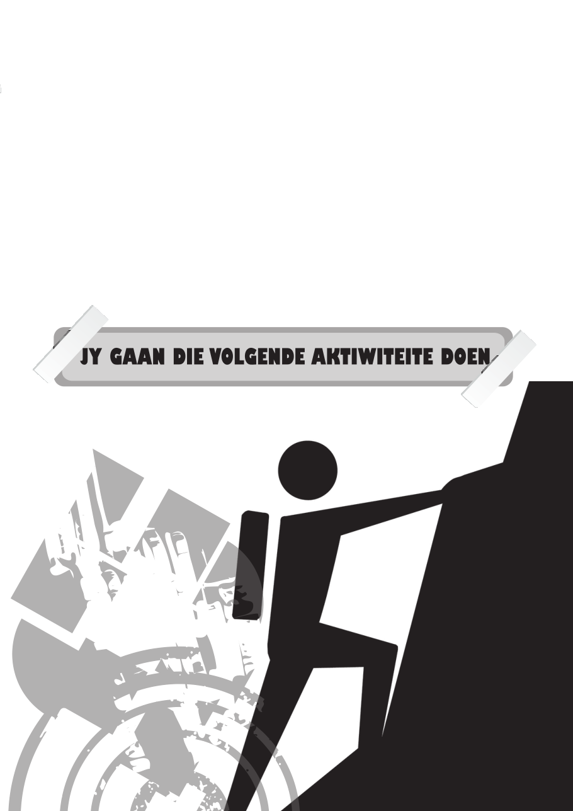

13
Fokus’n Ander woord vir fokus is eintlik maar net konsentrasie. En konsentrasie is die vermoë om jou denkprosesse te beheer. Baie keer hoor jy mense sê dat iemand ongeorganiseerd is. Wat hulle eintlik bedoel is dat dié persoon nie kan fokus nie. Die persoon kan nie sy/haar gedagtes so rig dat ’n taak sinvol en effektief afgehandel kan word nie. Om goed georganiseerd te wees, beteken jy kan jou gedagtes orden.
DoenJy ken sekerlik die spreekwoord van uitstel kom afstel. Jy kan die beste beplanner in jou graad wees, maar as jy nie tot aksie oorgaan nie, gaan niks gedoen word nie. Baie keer struikel mense oor hierdie laaste hekkie. Hulle beplan en organiseer hul studieprogram, koop penne en eksamenblokke, plak nota’s op die spieël maar kom net nie so ver om op die stoel agter die lessenaar te gaan sit nie. Party gaan sit selfs, maar begin dan verskonings soek om op te staan. Alles tevergeefs!
Die laaste, en dalk belangrikste, punt van goeie organisasie lê in die doen opgesluit. Dit beken dat jy klaarmaak wat jy begin, dat jy die taak na die beste van jou vermoë doen.
Ten slotte. Goeie organisasie kom nie vanself nie. Dit verg toeweiding, beplanning en harde werk, maar as jy eers georganiseerd is, is dit ’n wonderlike gevoel. Jy is in beheer en weet presies wat jy wanneer wil doen. Jy sal ook ontdek dat jy minder gestres is en meer tyd tot jou beskikking het om dinge te doen waarvan jy hou.
HIERDIE EENHEID HET GEEN AKTIWITEITE NIE.